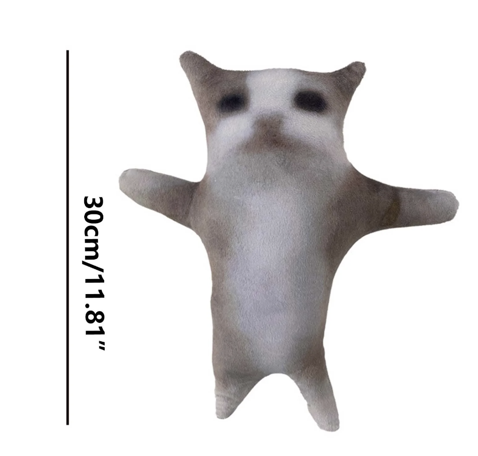

Heyoo I am Sion kim (See-on not sci-on), and I am very hungry. I am very hungry and tired and in a mournful life...no not actually hehehehehehehehehe If I disappear please find me in HARIBOLAND or HOGWARTS or the nearest 7-11...I love brownies...if you want to be my friend give me 10 large brownies...I also accept macarons...and I hope you enjoy my yapping page...hahaha
Here are a few pictures that represent me,,,all the time,,, with some keywords like heartbroken or pathetic or hungry

My state almost all the time